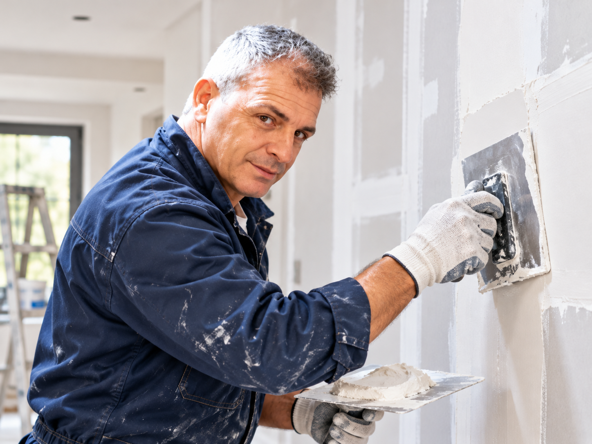

Stuccatura e rasatura
Preparazione della superficie per un risultato pulito e uniforme.
GIANLUCA LATINA • SIRACUSA
Stuccatura, rasatura, cartongesso, tinteggiatura e finiture di qualità per ambienti interni. Disponibili fornitura materiali, preparazione superfici e interventi coordinati con ristrutturazioni e impianti.
IL SERVIZIO
Preparazione della superficie per un risultato pulito e uniforme.
Pareti, nicchie e controsoffitti per valorizzare gli ambienti.
Tinteggiatura e dettagli finali con attenzione estetica.
INTERVENTI PRINCIPALI
LAVORI REALI
Una foto rappresentativa del servizio di stuccatura, finitura e cartongesso.

PARLIAMO DEL TUO PROGETTO
Invia alcune foto dell’ambiente, indica la zona e descrivi il risultato che vuoi ottenere. Valutiamo pitturazioni, cartongesso, stuccatura, rasatura e finiture.